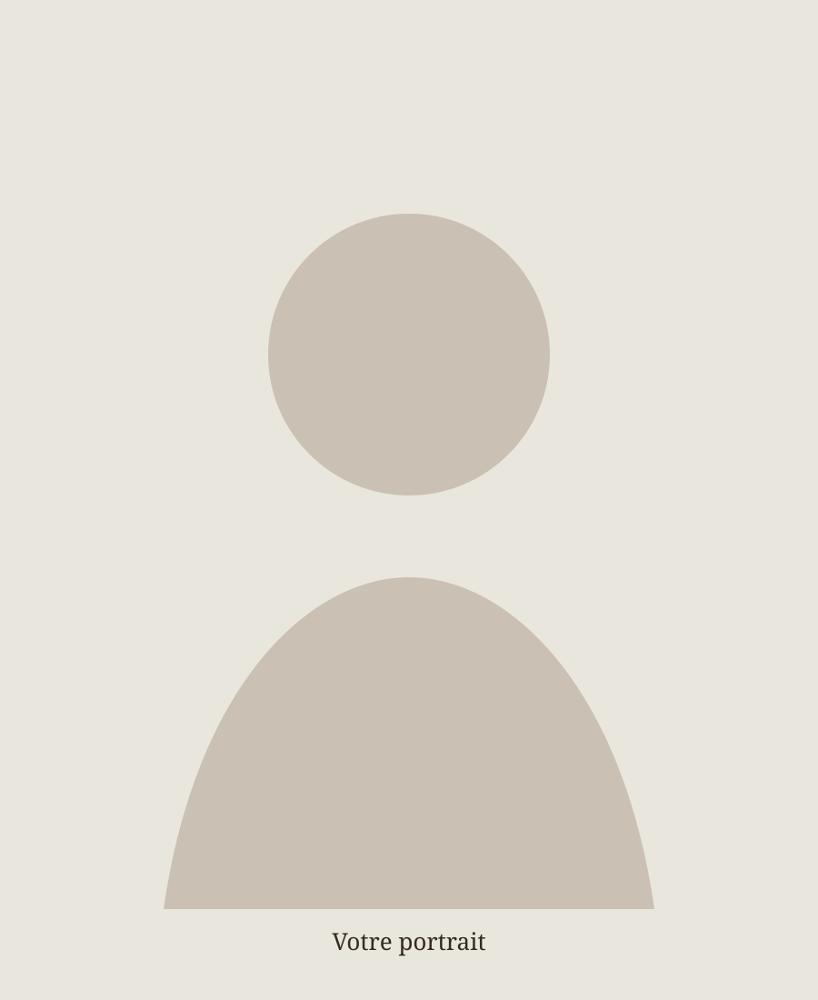

01
TEXTES
Écrire ce qui insiste.
Une traversée de textes autour de la clinique, de la littérature, du désir et de ce qui se déplace en nous.


02
LECTURES
Lire à voix haute.
Des lectures audio accompagnées d'images. Les fichiers audio pourront être ajoutés ici lorsque tu les auras.

À définir
Ajouter ici le titre et l'auteur.
Audio à ajouter
À définir
Ajouter ici le titre et l'auteur.
Audio à ajouter
À définir
Ajouter ici le titre et l'auteur.
Audio à ajouter
03
À PROPOS
Une place pour penser.

Safaa Laachi
Texte de présentation à remplacer par ta biographie, ton parcours et ce que tu souhaites partager ici.
Cette page peut accueillir ton rapport à la psychanalyse, à la littérature, à la clinique et aux questions qui traversent ton travail.
04
CONTACT
Écrire, simplement.
Pour une question, une invitation ou un échange.